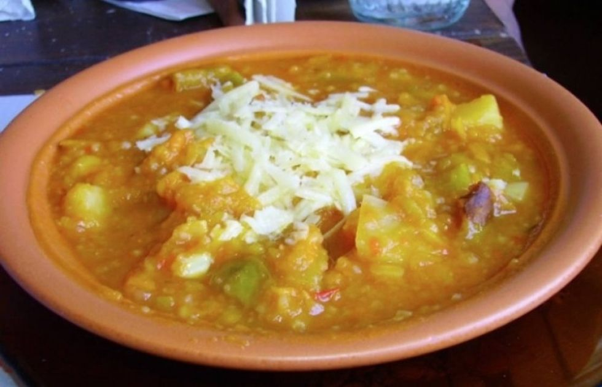
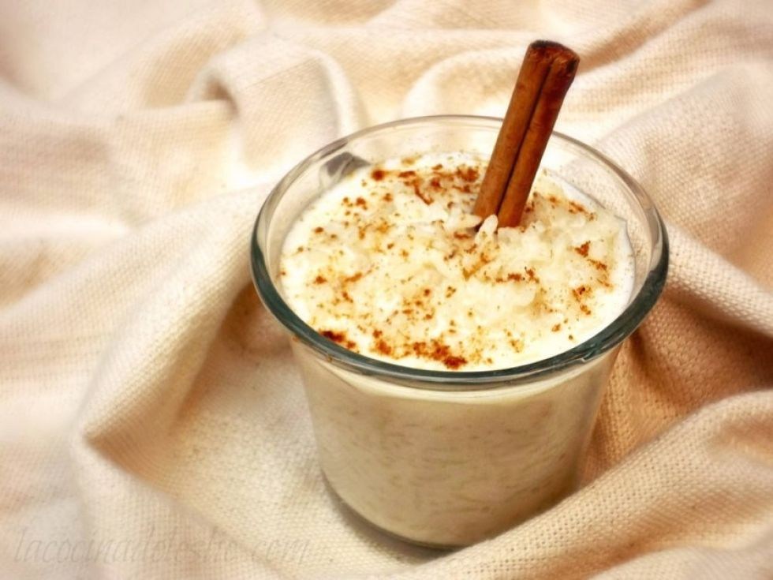
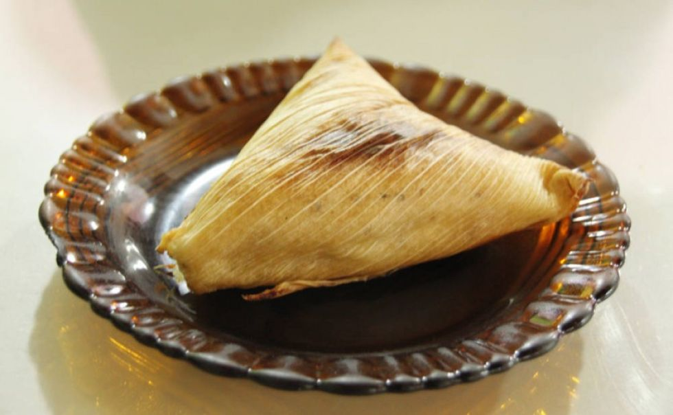
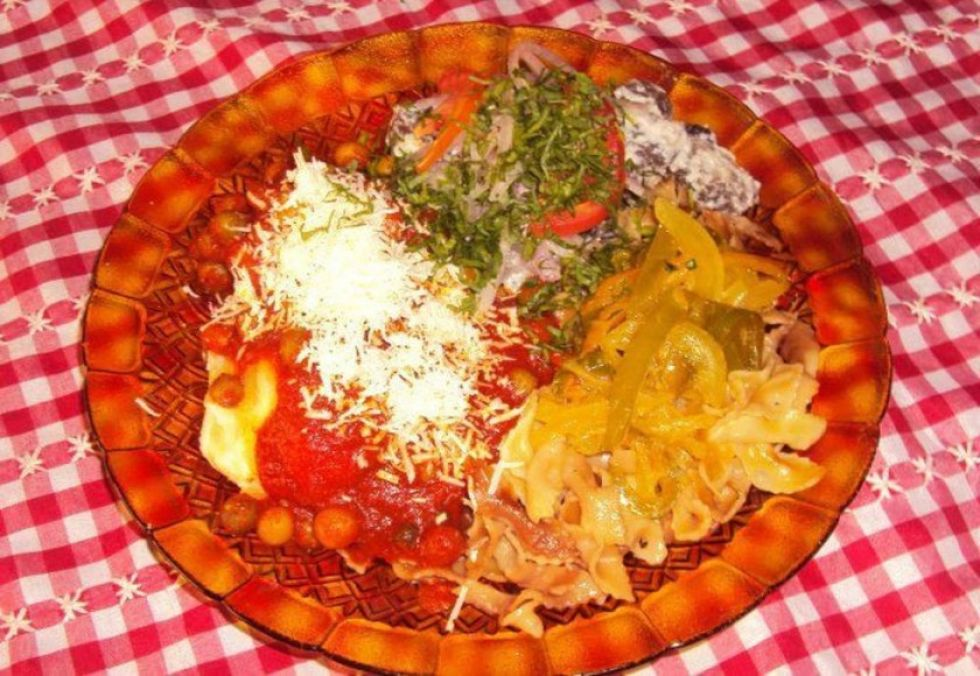
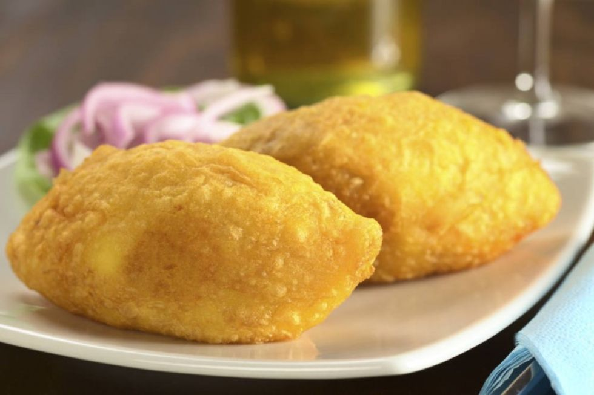
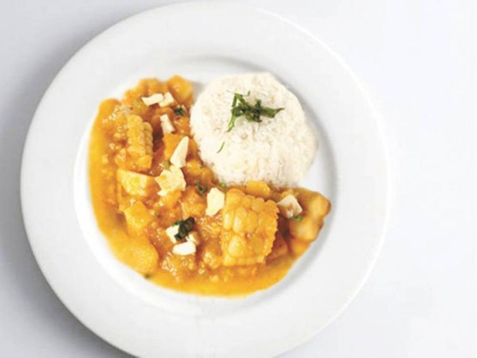
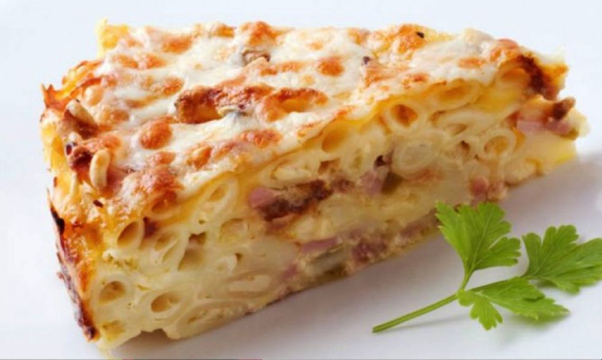
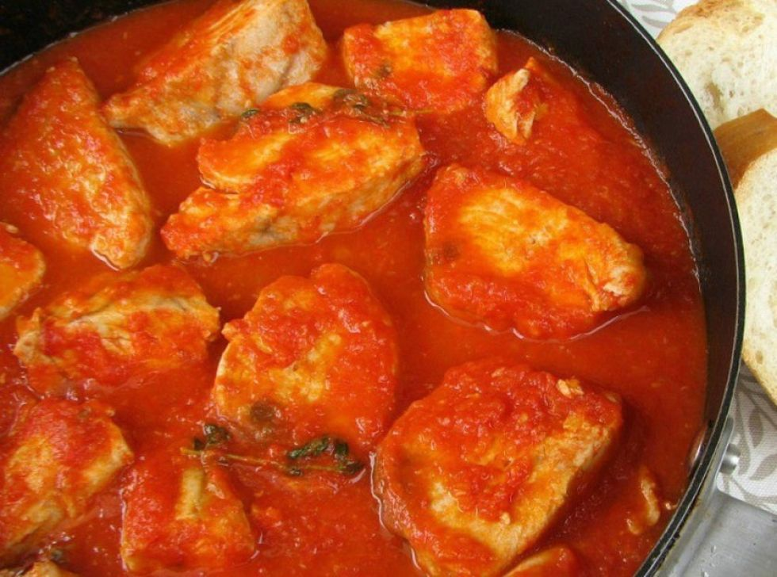
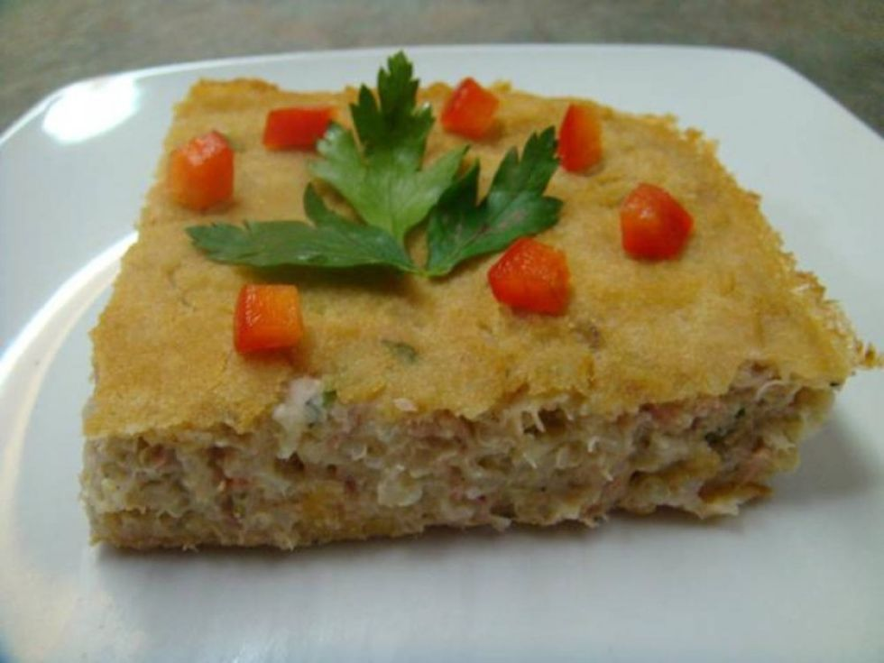

INGREDIENTES PARA AJÍ DE PAPALISA Para 2-3 personas:
INGREDIENTES PARA AJÍ DE PAPALISA Para 2-3 personas:
- Papalisa 300 g
- Patatas hervidas 400 g
- Carne molida
- 2 tazas de arroz
- 1-2 cucharaditasComino Molido / Comino
- 2 cebollas grandes
- 2 cucharaditasAjí Molido Rojo
- 500 ml de caldo de verduras o ternera (por ejemplo, cubos de caldo)
- Sal pimienta
- Aceite de girasol
- Se llevan a ebullición las patatas cocidas y la papalisa junto con agua en distintas ollas.
- Mientras tanto, agregue 2 tazas de arroz basmati y una taza de agua a una tercera cacerola.
- Ahora se lava el arroz con las manos en el agua para que desprenda almidón y al final adquiera un bonito color blanco.
- Luego se vierte el agua con la ayuda de un colador y este proceso se repite nuevamente con agua fresca.
- Rellenamos la olla de arroz con agua por tercera vez y ahora, al igual que los dos tipos de patatas, lo ponemos en la olla con un poco de sal a hervir.
- Las cebollas se cortan en trozos pequeños y se colocan en una sartén con un poco de aceite (de girasol). Agrega 2 cucharaditas de Ají Molido Rojo y un poco de comino (Comino Molido). El comino se puede moler recién antes o se puede comprar inmediatamente molido.
- Se agrega la carne picada y se saltea con las cebollas condimentadas.
- A continuación, agregue 500 ml de caldo de verduras. También se puede utilizar caldo de res si es necesario.
- Las patatas hervidas se ponen en una cacerola y se trituran. Luego hacemos lo mismo con la papalisa.
- Ahora solo hay que juntar los ingredientes individuales: se añaden las dos patatas a nuestra sartén, se remueven los ingredientes y se cuecen unos minutos más, se sirve el arroz cocido en un plato y se añade nuestro Ají de Papalisa. ¡Buen apetito!!

Ingredientes
Ingredientes
- 1 taza de Arroz
- 2 tazas de agua
- 2 tazas de leche entera
- 2 palitos de canela
- 1 cucharada de ralladura de lima
- 1½ taza de azúcar
- 1½ taza de pasas (opcional)
- Canela molida (opcional)
- Enjuague con agua fría el Arroz Basmati Mahatma® hasta que el líquido sea de un color claro. en agua fría hasta que el agua salga clara. Escurre cualquier exceso de agua. Después, caliente agua en una cacerola mediana hasta llevarla a ebullición.
- Cuando el agua comience a hervir, agregue el arroz, reduzca el fuego a temperatura baja y cocine,sin tapar el recipiente, durante 15 minutos. Pasado este tiempo, agregue la leche, las ramas de canela, la ralladura de lima y el azúcar.
- A continuación, vuelva a cocinar el arroz junto con el resto de ingredientes durante 15 minutos, removiendo el contenido de la olla de vez en cuando. Cuando el arroz esté listo, retire las ramas de canela.
- Opcional: sirva el resultado con pasas y un poco de canela molida.







